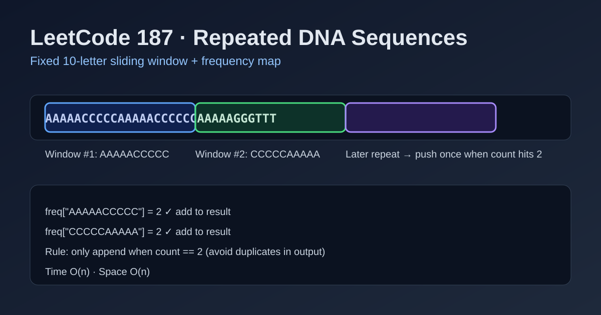

LeetCode 187: Repeated DNA Sequences (10-Letter Window Frequency Counting)
LeetCode 187StringSliding WindowToday we solve LeetCode 187 - Repeated DNA Sequences.
Source: https://leetcode.com/problems/repeated-dna-sequences/

English
Problem Summary
Given a DNA string s consisting of A/C/G/T, return all 10-letter-long substrings that appear more than once.
Key Insight
The window length is fixed to exactly 10. So we can slide a size-10 window from left to right, count each substring frequency, and output those whose count reaches 2 (first repeat moment).
Brute Force and Limitations
Comparing every pair of length-10 substrings is O(n^2). With a hash map, each window extraction and count update is direct, giving linear scan behavior for practical constraints.
Optimal Algorithm Steps
1) If s.length() < 10, return empty list.
2) For each start index i in [0, n-10], take sub = s[i..i+10) and increment freq[sub].
3) When freq[sub] == 2, append sub to answer once.
4) Return answer.
Complexity Analysis
Time: O(n) windows (with fixed-length 10 substring handling).
Space: O(n) in worst case for hash table and results.
Common Pitfalls
- Adding substring every time count >= 2 (causes duplicates in output).
- Missing boundary: last valid start is n - 10.
- Forgetting short string early return when n < 10.
Reference Implementations (Java / Go / C++ / Python / JavaScript)
import java.util.*;
class Solution {
public List<String> findRepeatedDnaSequences(String s) {
List<String> ans = new ArrayList<>();
if (s.length() < 10) return ans;
Map<String, Integer> freq = new HashMap<>();
for (int i = 0; i <= s.length() - 10; i++) {
String sub = s.substring(i, i + 10);
int c = freq.getOrDefault(sub, 0) + 1;
freq.put(sub, c);
if (c == 2) ans.add(sub);
}
return ans;
}
}func findRepeatedDnaSequences(s string) []string {
ans := []string{}
if len(s) < 10 {
return ans
}
freq := make(map[string]int)
for i := 0; i <= len(s)-10; i++ {
sub := s[i : i+10]
freq[sub]++
if freq[sub] == 2 {
ans = append(ans, sub)
}
}
return ans
}class Solution {
public:
vector<string> findRepeatedDnaSequences(string s) {
vector<string> ans;
if (s.size() < 10) return ans;
unordered_map<string, int> freq;
for (int i = 0; i <= (int)s.size() - 10; ++i) {
string sub = s.substr(i, 10);
int c = ++freq[sub];
if (c == 2) ans.push_back(sub);
}
return ans;
}
};from typing import List
class Solution:
def findRepeatedDnaSequences(self, s: str) -> List[str]:
ans = []
if len(s) < 10:
return ans
freq = {}
for i in range(len(s) - 9):
sub = s[i:i + 10]
freq[sub] = freq.get(sub, 0) + 1
if freq[sub] == 2:
ans.append(sub)
return ansvar findRepeatedDnaSequences = function(s) {
const ans = [];
if (s.length < 10) return ans;
const freq = new Map();
for (let i = 0; i <= s.length - 10; i++) {
const sub = s.slice(i, i + 10);
const c = (freq.get(sub) || 0) + 1;
freq.set(sub, c);
if (c === 2) ans.push(sub);
}
return ans;
};中文
题目概述
给定只包含 A/C/G/T 的 DNA 字符串 s，找出所有长度为 10 且在字符串中出现次数超过 1 次的子串。
核心思路
窗口长度固定就是 10，直接做定长滑动窗口统计频次即可。某个子串计数第一次达到 2 时，把它加入答案，保证每个重复子串只收录一次。
暴力解法与不足
若用双重循环比较所有长度为 10 的子串，复杂度会接近 O(n^2)。用哈希表记录频次后，只需单次线性扫描窗口，效率更稳定。
最优算法步骤
1）若 s.length < 10，直接返回空列表。
2）遍历起点 i=0..n-10，取 sub = s[i..i+10) 并计数。
3）当某个 sub 的计数变成 2 时加入答案。
4）遍历结束后返回答案。
复杂度分析
时间复杂度：O(n)（定长窗口扫描）。
空间复杂度：O(n)（哈希表与结果集）。
常见陷阱
- 当计数 >= 2 都加入结果，导致重复输出。
- 窗口边界写错，漏掉最后一个合法窗口。
- 忘记处理 n < 10 的快速返回。
多语言参考实现（Java / Go / C++ / Python / JavaScript）
import java.util.*;
class Solution {
public List<String> findRepeatedDnaSequences(String s) {
List<String> ans = new ArrayList<>();
if (s.length() < 10) return ans;
Map<String, Integer> freq = new HashMap<>();
for (int i = 0; i <= s.length() - 10; i++) {
String sub = s.substring(i, i + 10);
int c = freq.getOrDefault(sub, 0) + 1;
freq.put(sub, c);
if (c == 2) ans.add(sub);
}
return ans;
}
}func findRepeatedDnaSequences(s string) []string {
ans := []string{}
if len(s) < 10 {
return ans
}
freq := make(map[string]int)
for i := 0; i <= len(s)-10; i++ {
sub := s[i : i+10]
freq[sub]++
if freq[sub] == 2 {
ans = append(ans, sub)
}
}
return ans
}class Solution {
public:
vector<string> findRepeatedDnaSequences(string s) {
vector<string> ans;
if (s.size() < 10) return ans;
unordered_map<string, int> freq;
for (int i = 0; i <= (int)s.size() - 10; ++i) {
string sub = s.substr(i, 10);
int c = ++freq[sub];
if (c == 2) ans.push_back(sub);
}
return ans;
}
};from typing import List
class Solution:
def findRepeatedDnaSequences(self, s: str) -> List[str]:
ans = []
if len(s) < 10:
return ans
freq = {}
for i in range(len(s) - 9):
sub = s[i:i + 10]
freq[sub] = freq.get(sub, 0) + 1
if freq[sub] == 2:
ans.append(sub)
return ansvar findRepeatedDnaSequences = function(s) {
const ans = [];
if (s.length < 10) return ans;
const freq = new Map();
for (let i = 0; i <= s.length - 10; i++) {
const sub = s.slice(i, i + 10);
const c = (freq.get(sub) || 0) + 1;
freq.set(sub, c);
if (c === 2) ans.push(sub);
}
return ans;
};
Comments